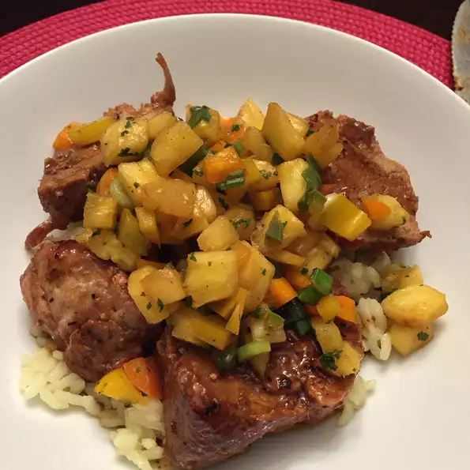

- Prep:15 mins
- Cook:35 mins
- Additional: 10 mins
- Total:1 hr
- Servings:6
- Yield:6 servings
ingredients
- 2 (1 pound) pork tenderloins
- 3 tablespoons brown sugar
- 3 tablespoons Dijon mustard
- ¾ teaspoon minced fresh ginger root
- 2 cups chopped fresh pineapple
- ⅓ cup chopped red bell pepper
- 1 small jalapeno pepper, seeded and chopped
- 2 green onions, chopped
- 1 tablespoon minced fresh cilantro
- 1 tablespoon brown sugar